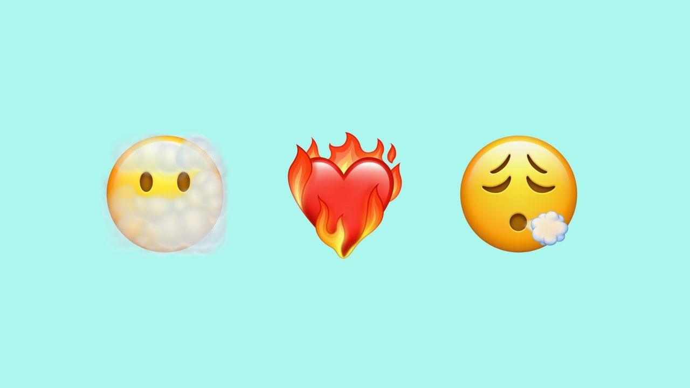
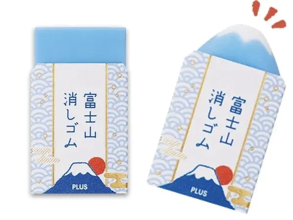

设计周刊 Design Weekly #47
📕 设计资源
UX Research 入门指南
本资源由Lade Tawak整理。如果你对用户体验入门感兴趣，但不知道从哪里开始，本指南包含的资源和文章可以帮助你。
Uizard
一款 AI 驱动的设计工具，每个人都能够设计网站和 App 的设计工具。
Vector Illustration Creator
https://icons8.com/vector-creator
矢量插画创造者，你可以从 3000+的元素中创建免费的个性化插画。
📗 设计文章
This Is Not Good Design
https://www.chrbutler.com/this-is-not-good-design
关于什么是好的设计已经有很多文章，作者另辟蹊径从 Not Good Design 的角度诠释了对设计的理解。
A 30–60–90 day plan for product designers
https://uxdesign.cc/a-30-60-90-day-plan-for-product-designers-f475aad13815
作者 Arturo Ríos 通过自己在新工作中的经验，为每个加入新团队的产品设计师整理了一份 30-60-90 天的指南。（公众号内回复 plan 可获得这份指南的 notion 链接）
First Look: 217 New Emojis in iOS 14.5
https://blog.emojipedia.org/first-look-217-new-emojis-in-ios-14-5/
设计抢先看，iOS14.5 的表情已经在路上了，这次更新包含了疫苗友好的注射器、混合肤色的情侣表情以及着火的心等。

📘 设计案例
维基百科20岁，它是这样给自己庆生的
https://www.topys.cn/article/31458
今年，维基百科迎来了它的 20 岁生日（没想到它这么年轻）。 来看看它是怎么给自己庆生的吧。
新的十年开始，小麦同学换上了全新的战袍
https://www.topys.cn/article/31454
进入2021，我们正式来到了本世纪的第三个十年。很多大品牌都更新了视觉设计，换好新衣服开始迎接下一个阶段的挑战。
麦当劳也重新设计了他们的全球包装系统，由知名创意设计公司 Pearfisher 为其换装，整体风格在保持整体调性的同时，提炼了品牌原有的设计系统，塑造了全新大胆且简单的风格。简单的快乐着。
📙 设计灵感
万物皆有关联-misatoの创意治愈漫画
https://mp.weixin.qq.com/s/hoinwVvYhjj76EJu4J7Jmw
生活不能没有诗意的联想，如果失去，那该是多么枯燥的世界呀。
misato，1989年出生，毕业于武藏野美术大学视觉传达设计专业。近年来在东京都内动画制作公司从事广告、网络动画等动画制作。在推特上发表自己的作品，以其独特的世界观和有趣的表达收获得了大量粉丝。

日本设计师真的很爱设计橡皮！
https://www.shejipi.com/535016.html
对于已经好多年不用橡皮的我们来说，又有了买橡皮的冲动！
这么不起眼的小物件，在日本设计圈还真是受欢迎呀！以擦出现真身的设计常常用在橡皮上，一起来看看有什么惊喜在等你。
